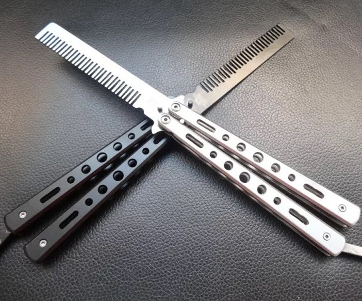
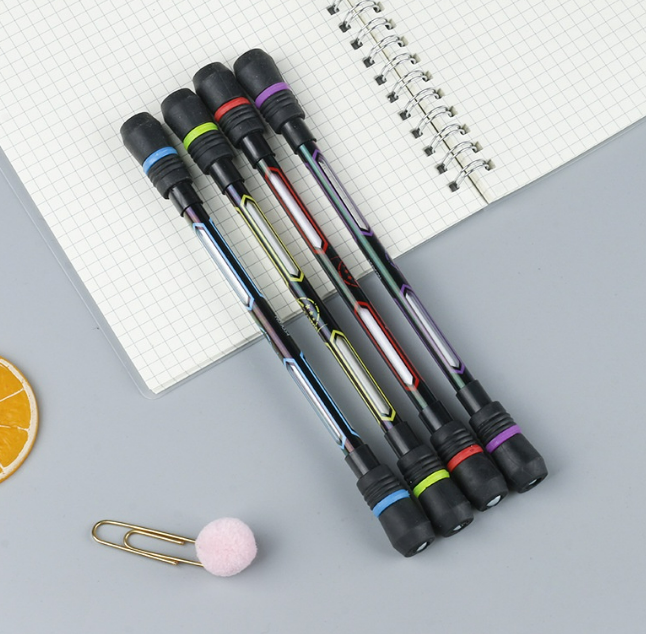
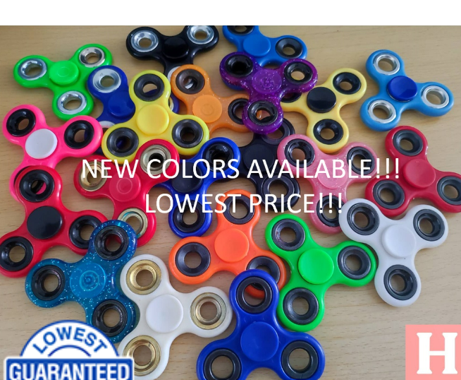

Butterfly Knife
We recommend a balisong comb or a "balicomb" here so that it is still aesthetic in its own way and is relatively safe (and cheap) compared to other balisongs/butterfly knives, dulled or not.

Balance Pen
For this one, it doesn't really matter too much which one you buy as long as you're comfortable with it and it is still a balance pen. We still recommend this one as it is pretty cheap and is sufficient enough to fulfil our needs to fidget with our hands.

Fidget Spinner
For fidget spinners, it doesn't really matter which one you choose as long as, in our opinion, you think that the design is cool. If you just want a fidget spinner and don't really care for the design, here is one of the standard ones with a relatively cheap price compared to the stylish cool ones.
